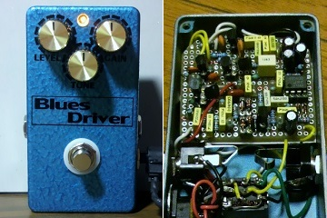
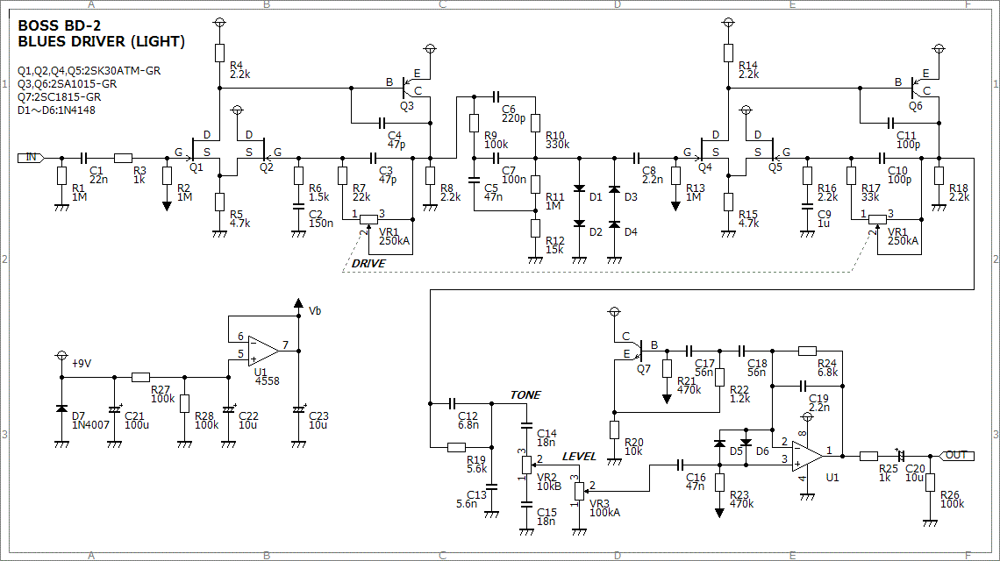
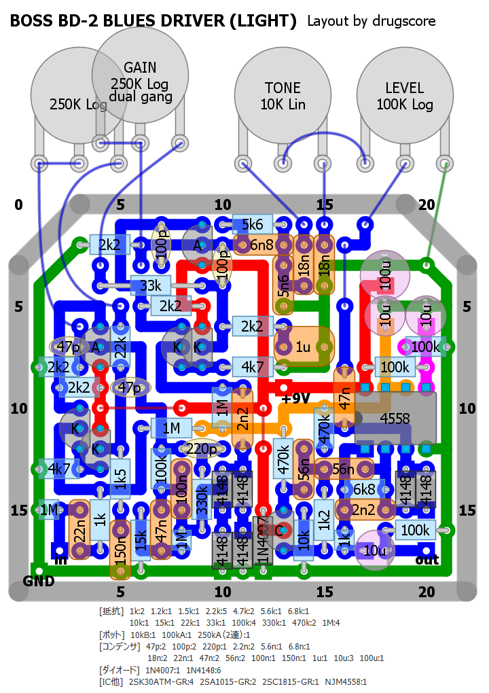
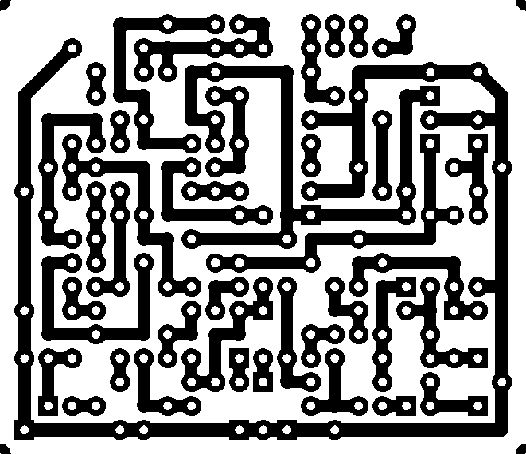
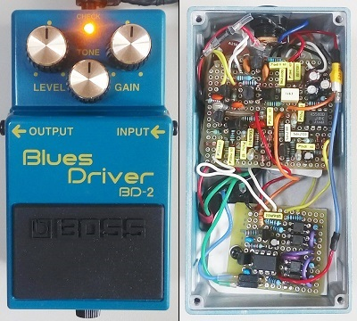
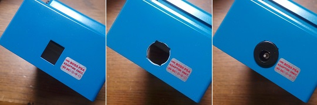

BOSS BD-2 Blues Driver
2014年03月02日 カテゴリー：自作エフェクター（アナログ）

なんとなく回路が面白そうだったので作りました。BOSS BD-2 Blues Driverです。部品数が多めで実機が高価でないためか、自作されている方は少ないような気がします。
▽回路図

ライトバージョンということで、入力と出力のバッファ回路等を省いてトゥルーバイパス用になっています。電源部分の抵抗やコンデンサの値も多少違いますが、あまり出音には影響ないでしょう。
▽レイアウト

▽PCB（横55.9mm縦48.3mm）

元の回路図のC17（上の回路図のC12）は文字がつぶれていて判読しづらいですが、たぶん0.0068μFだと思います。歪みの調整幅が広いのは、ゲインにデュアルポットを使っているためなんですね。Youtubeで聞く限りではそれなりに実機の音を再現できているようです。
（2016年11月9日回路図・部品リスト・PCB追加）
---以下2018年6月21日追記---
Twitterでのやりとりから入手したBD-2の筐体へ中身を移植しました。

MOSリレーバイパスを使い、それに伴い基板上の抵抗R1は取り外しています。フォンジャックやポットの干渉を避けるのが意外と大変でした。見た目を似せる気はなかったので手持ちのノブを取り付けています。本物と同じノブはローランド・オンライン・ストアで購入可能です。
DCジャックの角穴はステップドリルとリーマーで広げ、普通のDCジャックを取り付けています。加工するのはもったいない感じがしますし微妙に隙間があくのですが、電源トラブルを確実に避けるためにはやむを得ないでしょう。
